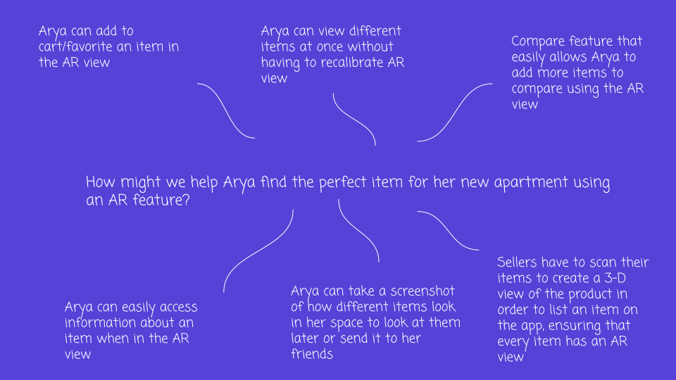
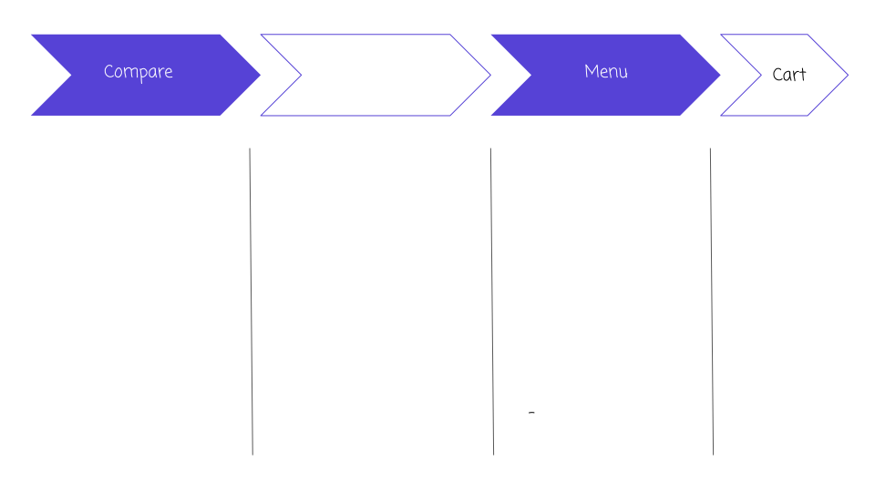
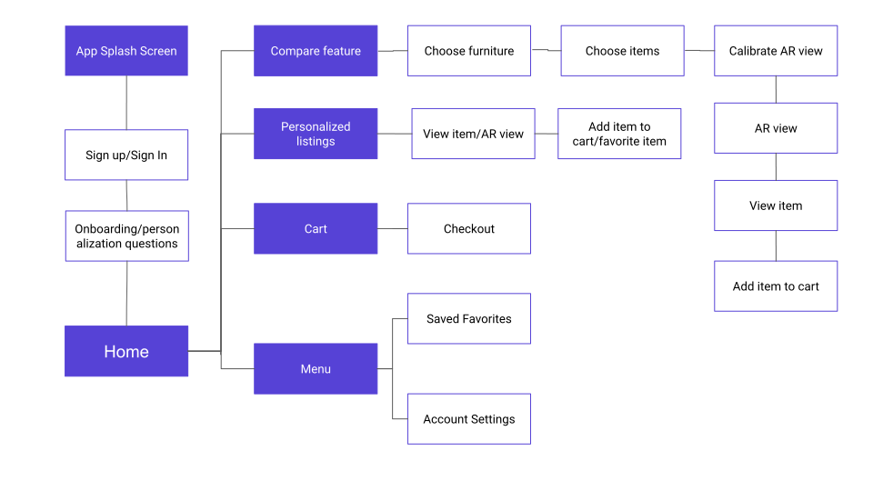
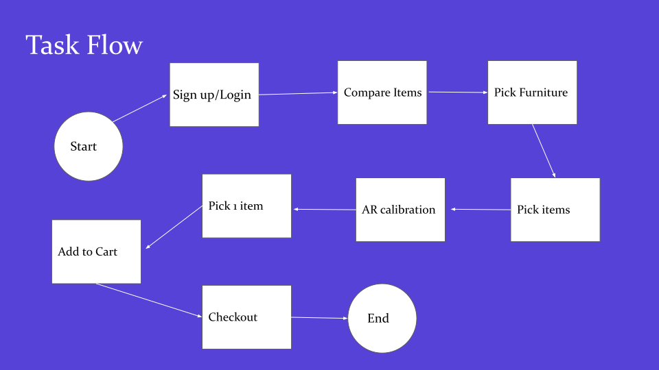
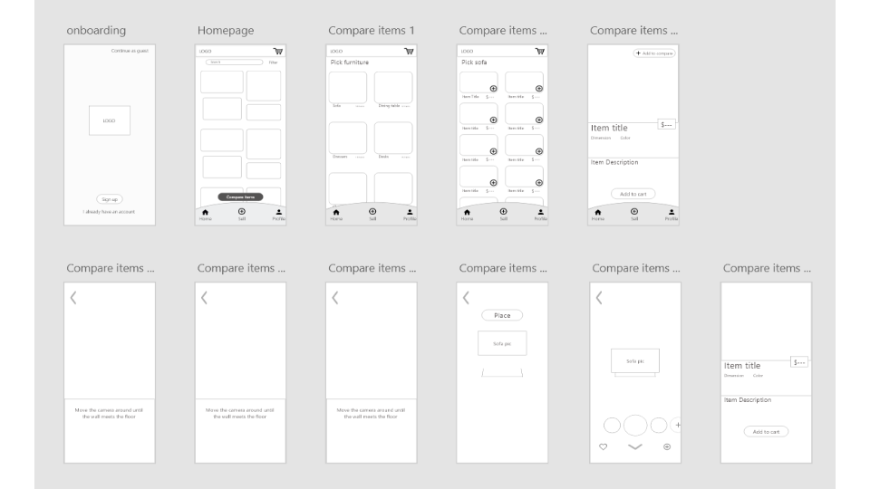
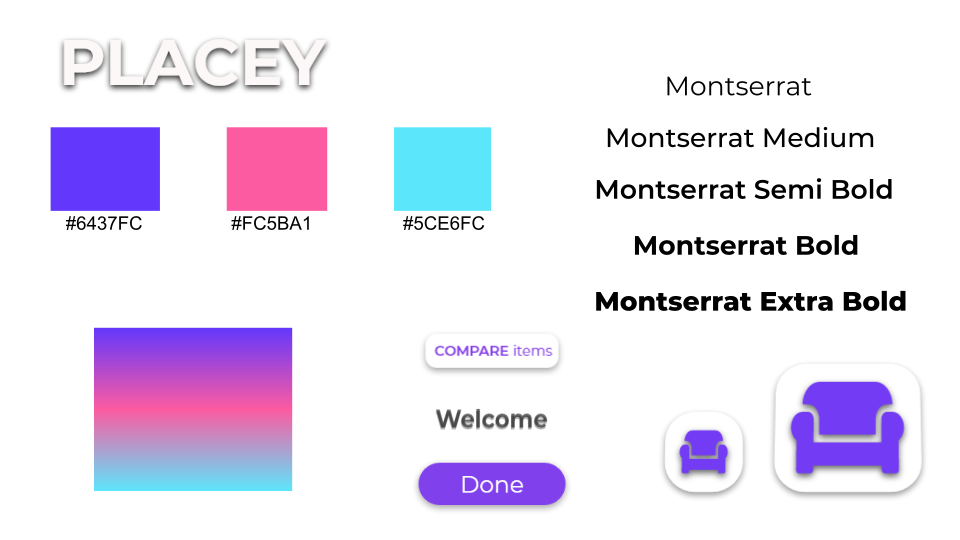

Placey

Tools
Designing - Adobe XD
Topics
UX/UI Design
UX Research
Problem
Design an improved buying and selling platform with an AR feature
Solution
Placey is a mobile application that allows users to compare items they are interested in with an AR compare feature. Placey also allows user to post a listing on the platform and take a 3D image of their item to create an AR view for buyers. Placey helps improve the trust of its customers in buying used items.
Empathize
Before jumping into brainstorming and designing, I first gathered some data on user shopping habits, AR technology in ecommerce, and user pain points to understand and pinpoint what problem I was trying to solve. I conducted market research, AR technology analysis, competitive analysis, and 5 user interviews.
Market Research
- 85% of consumers prefer mobile apps to mobile websites
- By 2022 over 120,000 stores will be using Augmented Reality (AR) technologies, offering a much richer buying experience (Prnewswire, 2018).
- One of the main concerns that people have when shopping online is the inability to see the product firsthand.
- AR technology helps bridge this gap and enable online shoppers to better visualize the products that they are interested in.
Augmented Reality technology analysis
- The ability to preview the item in AR takes away some of the uncertainty of shopping online, and several participants commented that they felt more confident that they would not have to go through the hassle of returning their purchase.
- According to the survey by Gartner, almost 50 percent of retailers plan to invest in augmented or virtual reality.
- Ensure that an AR feature is highly discoverable, clearly explained, simple to calibrate, and easy to interact with.(Nielsen Norman Group)
Competitive Analysis
I conducted competitive analysis on 3 of the most used AR based ecommerce apps: IKEA Place, Houzz, and Wayfair. I looked through the app reviews and used each of the apps to discover their strengths and weaknesses.

Insight from user interviews
I interviewed 5 participants to ask about their experience with AR in ecommerce stores like Wayfair and Houzz. I asked about their buying habits, their favorite features, and features they would like to see in an ecommerce app.
- These were the 2 pain points that I narrowed down to from the interviews:
- No compare feature to see how different items might look side by side.
- Not all items had an AR option making it harder for users to make a decision.
I wish there was an easy way to compare items I'm interested in
Meet Arya
From the interviews, I created a user persona to empathize with the users needs and frustrations. I was also able to effectively pinpoint the pain points to help me ideate useful solutions for the users.

Define
After understanding users' problems and needs, I developed a project plan by organizing and analyzing the research, then defining the problem.
Key insights from research
- AR technologies help users visualize products their interested in and takes away their main concern of online shopping which is not being able to properly see the product.
- One pain point is the lack of items in apps have that have an AR feature. There are multiple items that use AR in IKEA Place, Houzz, and Wayfair but the main complaint from most reviews were there were only limited items that offered AR view.
- There isn't an easy way to compare items that a user is interested in.
Project goals
Before brainstorming, I needed to define the goals of the project. At this point, I started laying out a strategy to help determine what goals I’m trying to meet and to help me determine which solutions I need to prioritize. I analyzed my research and decided that these were the top 3 goals of my project:
- Create an app that helps user easily compare items they're interested in buying.
- Design an intuitive and personalized, Gen Z/Millennial targeted app.
Brainstorming
I started my brainstorming process to come up with solutions for the above key insights by mind mapping to quickly generate as many ideas as I could.
How might we help Carrie find the perfect item for her new apartment using an AR feature?
Ideate
In the ideation phase, I used all the features I gathered from the HMW activity and started organizing all the features with a feature list, application map, and task flow.
Feature list
After brainstorming, I decided to create a feature list to organize all the features needed to create the solution for Arya.
Application Map
In order to better understand the architecture of the application and how these features would fit in, I created an application map to organize the screens.
Task flow
User flow: Buy an armchair
Design
Wireframes on Adobe XD
Branding & Design
After brainstorming features, creating an application map, and designing the above lo fi screens, I created the brand kit. Since the user base is mainly Millennials and Gen Z, I decided to use bold colors to create a fun, new, and unique shopping experience.
